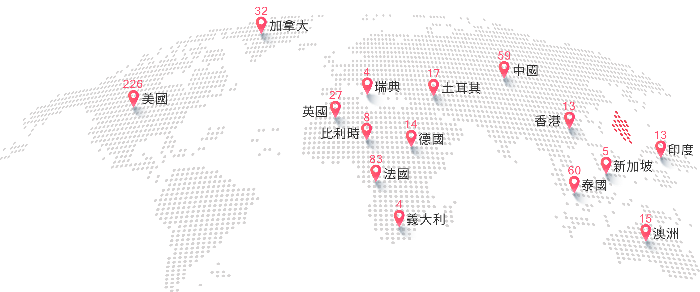

生之寶深耕於生命科學與再生醫學已經超過 20 年。
從臍帶&臍帶血儲存開始，
我們奠定了對於幹細胞的多項專業技術，
並不斷在研發與應用上持續突破，造福人群。
近年來我們更將研究成果延伸至外泌體領域，
將原本屬於醫學前沿的科研技術，
轉化成能夠改善生活品質的日常保養和美妝用品。
我們的品牌理念是「儲存希望、研究創新、治療實踐」。
這不僅是一句口號，
而是我們在每一個服務與產品中落實的核心信念。
我們相信：「儲存不是終點，而是開始」。
生之寶理念 Vision
VISION

外泌體 EXOSOME
外泌體是一種微小卻關鍵的奈米囊泡，
它能攜帶蛋白質、RNA 與脂質，
就像是「細胞的小小郵差」，
負責將訊息傳遞至不同的細胞之間。
近年來外泌體成為全球醫學奈米級的科研新星，
雖然外泌體無法被肉眼看見，
但它的潛力正在逐漸被揭示，
並開啟了再生醫學、精準醫療與高階保養的新時代。
生之寶更應用於頭皮養護、肌膚保養、醫療用途，
讓科研成果真正走進日常生活，
實現「從細胞開始的健康呵護」。
它能攜帶蛋白質、RNA 與脂質，
就像是「細胞的小小郵差」，
負責將訊息傳遞至不同的細胞之間。
近年來外泌體成為全球醫學奈米級的科研新星，
雖然外泌體無法被肉眼看見，
但它的潛力正在逐漸被揭示，
並開啟了再生醫學、精準醫療與高階保養的新時代。
生之寶更應用於頭皮養護、肌膚保養、醫療用途，
讓科研成果真正走進日常生活，
實現「從細胞開始的健康呵護」。
EXOSOME

國際認證 CERTIFICATION
生之寶都是通過AABB美國國際組織認證的實驗室，
產品也都是通過多重品質檢測，確保安全性與穩定性。
我們擁有 3D 無血清培養專利技術 ，
能讓每一批產品達到相同標準，確保使用者安心。
此外我們在配方上堅持「純淨、安全、透明」，
所有產品均不含酒精、人工色素與香料，
敏弱肌也能安心使用。
我們相信，嚴謹的科研是品質的基礎，
而品質則是使用者信賴的來源。
產品也都是通過多重品質檢測，確保安全性與穩定性。
我們擁有 3D 無血清培養專利技術 ，
能讓每一批產品達到相同標準，確保使用者安心。
此外我們在配方上堅持「純淨、安全、透明」，
所有產品均不含酒精、人工色素與香料，
敏弱肌也能安心使用。
我們相信，嚴謹的科研是品質的基礎，
而品質則是使用者信賴的來源。
CERTIFICATION

口碑回饋 FEEDBACK
生之寶都是通過AABB美國國際組織認證的實驗室，
自推出以來，
外泌體科研收穫了眾多肯定。
這些來自消費者的真實聲音，
不僅是對產品的肯定，
更是對我們的支持。
自推出以來，
外泌體科研收穫了眾多肯定。
這些來自消費者的真實聲音，
不僅是對產品的肯定，
更是對我們的支持。
FEEDBACK


國際血庫 BLOOD BANKS
生之寶國際標準公庫獲美國聯邦聯邦政府核准，
成為美國國家骨髓捐贈計畫(NMDP)會員。
並加入美國FDA核准之新藥臨床實驗(IND)，
臍帶血可以在美境內直接使用。
生之寶持續上傳臍帶血資料，
挑戰NMDP全球第一大亞裔血庫。
除NMDP外，
生之寶同時是世界骨髓
捐贈者協會(WMDA)成員，
WMDA提供世界最大
造血細胞數據庫的搜尋與配對服務。
生之寶獲全球多國公庫的國際認可，
只為提供存戶與家人最好的全球化移植與服務。
成為美國國家骨髓捐贈計畫(NMDP)會員。
並加入美國FDA核准之新藥臨床實驗(IND)，
臍帶血可以在美境內直接使用。
生之寶持續上傳臍帶血資料，
挑戰NMDP全球第一大亞裔血庫。
除NMDP外，
生之寶同時是世界骨髓
捐贈者協會(WMDA)成員，
WMDA提供世界最大
造血細胞數據庫的搜尋與配對服務。
生之寶獲全球多國公庫的國際認可，
只為提供存戶與家人最好的全球化移植與服務。
BLOOD BANKS
